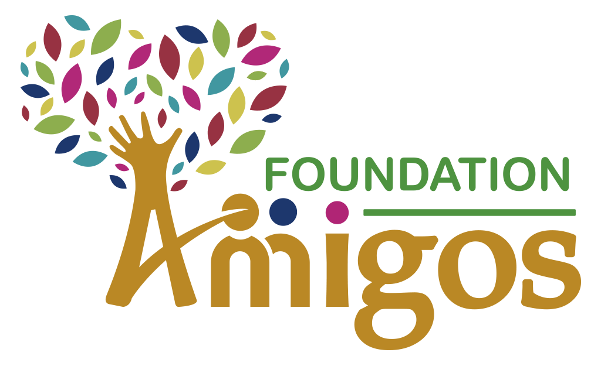

Learn more about InAmigos Foundation and our journey towards creating a better society.

InAmigos Foundation was established on 23 September 2020 by Mr. Govind Shukla. It is a Section 8 registered non-profit organization working across India to create meaningful social impact through education, environmental conservation, women empowerment, animal welfare, community service, and skill development.
With the support of passionate volunteers and professionals, the foundation continues to transform lives while promoting transparency, compassion, and sustainable development.
To empower communities through education, environmental protection, women empowerment, youth skill development, and social welfare by encouraging collective action and volunteerism.
To build an inclusive, compassionate, and self-reliant society where everyone has equal opportunities to grow and contribute positively to the community.